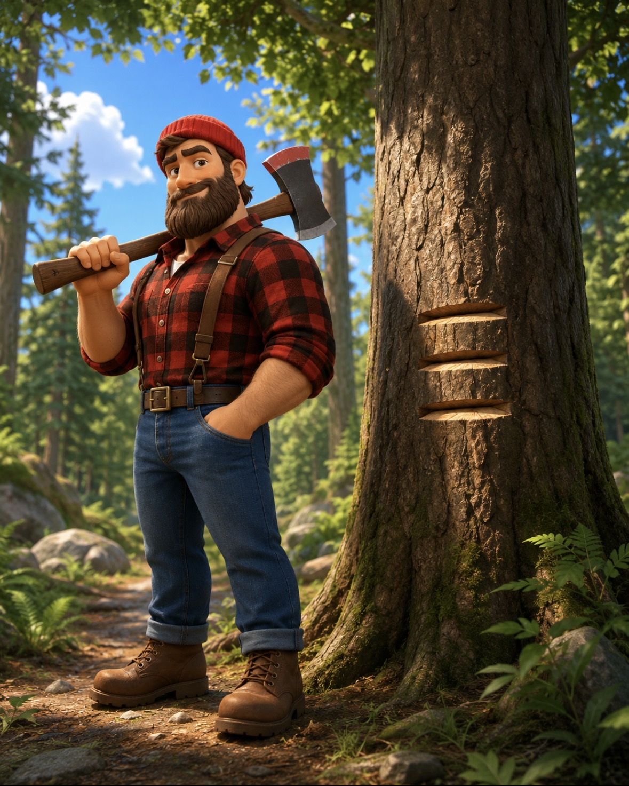

3Notch is the format and the local plumbing for a hand-off you direct but no longer have to carry by hand.
A local-first CLI and MCP server for moving AI project context across boundaries — between tools, repos, projects, and machines. You're already the bus for your AI context, copying summaries between Claude, Codex, Cursor, ChatGPT. 3Notch is the packet layer you wish you'd had. The bytes move between tools; you stay the author and reviewer.
3, paper-tone Notch on dark. Mark-red 3, near-black Notch on light. The colored numeral is the only acceptable visual emphasis inside the wordmark. The wordmark is never rendered in Geist Mono (the proportions kill the numeral kerning) and never rendered with the N coloured.
N on all four sides.N..notch/ store is live and reachable by MCP. Subtitle in Geist Mono — the technical contrast font. Footer status strip on the website, IDE status bar plugin, dashboard pill on a third-party browse tool.-0.025em on display sizes (≥ 28px) and 0em on body sizes.✓ glyph. Warning = paper-dim text with weight. Error = paper text with a mark-red prefix or border-left. The system does not introduce green/yellow/blue for semantic state — the glyph and the weight carry the meaning, not a new hue. (Earlier v0.1 included a Signal green; removed in this revision.)3Notch — display, marketing, prosenotch — CLI command, all-lowercase@3notch/cli — npm package3notch.dev — domain80×80 viewBox is canonical; render larger sizes by scaling proportionally and reducing stroke-width gain. The mark must look identical when rasterized to favicon, displayed at 44px in nav, or printed at 4 inches on a sticker.
notch --about)3Notch with capital T-N, no spacesite/public/brand/ (to be created)
'Geist', system-ui, -apple-system, sans-serif. Convert wordmark text to outline paths in the produced SVGs so they render without webfont dependencies. The 3notch-og-card.png is deliberately mascot-free per Section 10 rules.